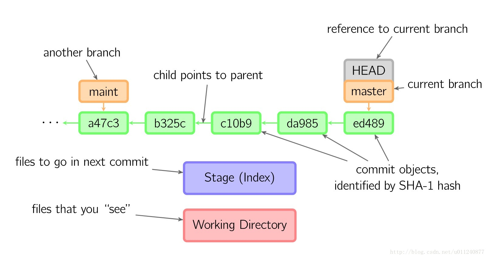
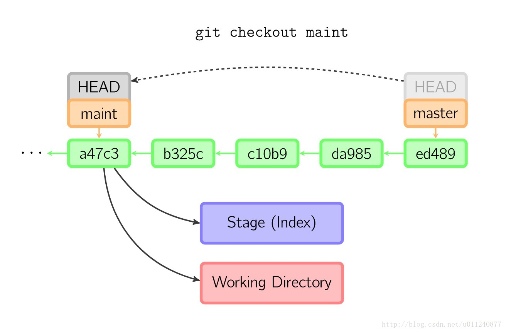

什么是 HEAD
Git 中的 HEAD 可以理解为一个指针，我们可以在命令行中输入 cat .git/HEAD 查看当前 HEAD 指向哪儿，一般它指向当前工作目录所在分支的最新提交。

当使用 git checkout < branch_name> 切换分支时，HEAD 会移动到指定分支。

但是如果使用的是 git checkout < commit id>，即切换到指定的某一次提交，HEAD 就会处于 detached 状态（游离状态）。

HEAD 游离状态的利与弊
HEAD 处于游离状态时，我们可以很方便地在历史版本之间互相切换，比如需要回到某次提交，直接 checkout 对应的 commit id 或者 tag 名即可。
它的弊端就是：在这个基础上的提交会新开一个匿名分支！

也就是说我们的提交是无法可见保存的，一旦切到别的分支，游离状态以后的提交就不可追溯了。

解决办法就是新建一个分支保存游离状态后的提交：

具体解决操作
git branch -v 查看当前领先多少，确定游离前的分支，新建一个 temp 分支，把当前提交的代码放到整个分支
checkout 出要回到游离前的分支
然后 merge 刚才创建的临时分支，把那些代码拿回来
git status 查看下合并结果，有冲突就解决
合并 OK 后就提交到远端
删除刚才创建的临时分支